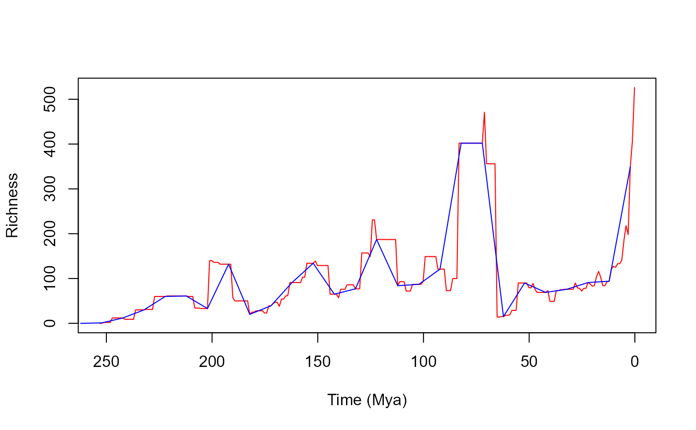
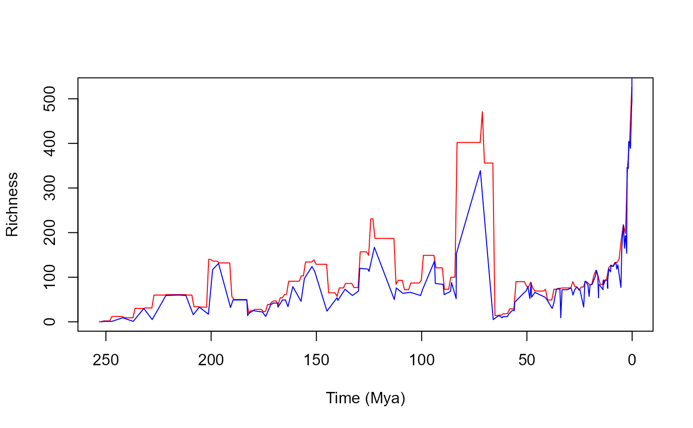

Calculate paleo diversity curves through different methods
Source:R/calcFossilDivTT.R
calcFossilDivTT.RdcalcFossilDivTT calculates fossil diversity through time using
different methods.
Arguments
- data
A
data.framecontaining the columns:max_ma,min_maand the name provided intax.lvl.max_maandmin_maare respectively the early and late bounds of rock layer's age.tax.lvlcolumn is the taxonomic level of the data. Any additional columns are ignored.- tax.lvl
A
charactergiving the taxonomic in which calculations will be based on (default value is"species"). This must refer to the column names indata.- method
A
characterstring setting the method which should be used. Could be either"rangethrough"or"stdmethod", which will respectively calculate diversity using the range through or the standard methods (Foote & Miller, 2007)- bin.reso
A
numericassigning the resolution (length) of the time bin to consider in calculations. Default value is1(which in most cases - e.g. those following the Paleobiology Database default timescale - will equate to one million years)
Value
A data.frame containing the diversity (column div) of
the chosen taxonomic level through time, with calculation based on
method. If "method = rangethrough", the time moments are the
layer boundaries given in data.
If "method = stdmethod", the time moments are evenly-space bins with
length equal to bin.reso, starting at the earliest bound in the
dataset.
References
Foote, M., Miller, A. I., Raup, D. M., & Stanley, S. M. (2007). Principles of paleontology. Macmillan.
See also
Other macroevolution:
checkAndFixUltrametric(),
countSeqDiffs(),
estimateSpeciation(),
fitCRBD(),
lttPlot(),
plotPaintedWhales(),
plotProteinSeq(),
plotRawFossilOccs(),
simulateBirthDeathRich(),
simulateTree()
Examples
# Loading data
data("dinos_fossil")
# Using function:
div1 <- calcFossilDivTT(dinos_fossil, method = "stdmethod")
div2 <- calcFossilDivTT(dinos_fossil, method = "stdmethod", bin.reso = 10)
# Comparing different bins sizes in the standard method
plot(x=div1$age, y=div1$div, type="l",
xlab = "Time (Mya)", ylab = "Richness",
xlim=rev(range(div1$age)), col="red")
lines(x=div2$age, y=div2$div, col="blue")

# Comparing different methods:
div3 <- calcFossilDivTT(dinos_fossil, method = "rangethrough")
plot(x=div1$age, y=div1$div, type="l",
xlab = "Time (Mya)", ylab = "Richness",
xlim=rev(range(div1$age)), col="red")
lines(x=div3$age, y=div3$div, col="blue")
